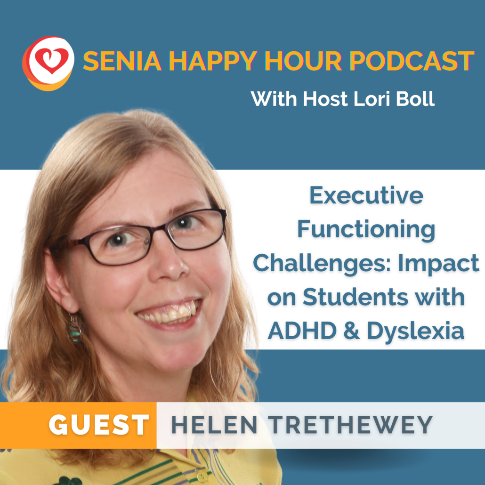

Articles
Practical writing on dyslexia, ADHD, giftedness and executive function.
Latest
- 28 February 2026
Finding the Lost Girls
Why ADHD is so often missed in girls, and what schools and parents can do about it.
ADHD - 18 October 2025
Individuals, not checklists
A diagnosis is a starting point. Getting to know the student comes first.
Teaching - March 2023
Task initiation and executive functions
Why starting a task can be a genuine difficulty for students with ADHD and dyslexia.
Executive function
Featured articles
These longer guides are on Helen's original site.
How to Support Dyslexic Learners at Home
One of the anomalies of school life is that week after week children are sent home spellings to learn but very rarely are we taught how to learn spellings.
Supporting Working Memory Difficulties
Working memory difficulties are one of the most overlooked parts of many learning difficulties, including dyslexia. It is why children miss instructions and struggle with multi-step tasks.
How to Create a Dyslexia friendly Classroom
Set realistic, achievable targets for each lesson. Dyslexic children are often working twice as hard to process instructions.
ADHD Explained
ADHD is far more than a hyperactive boy who is out of control. This article looks at what it really is.
Visual Perceptual Difficulties
Visual perception is the way the brain processes visual information. It is different from 20/20 vision.
First Steps after Dyslexia Diagnosis
Realising that your child is dyslexic can be difficult to come to terms with. Here is where to begin.
The Early Signs of Dyslexia and Early Intervention
The signs of dyslexia show up very early, long before a child starts school.
Early Indicators of Dyslexia
Years of experience have taught me that the signs of dyslexia show up very early.
Most-read on the blog
Helen has written about learning differences on her blog since July 2017.
Different types of dyslexia
How to support children with Stealth Dyslexia
Understanding Dyslexia
Executive Function challenges impact the lives of students with ADHD
The impact of Executive Functions: task initiation and emotional regulation
Gifted and active?
Teacher tips for a dyslexia friendly classroom
The complexity of writing
Listen

SENIA Happy Hour podcast, Show 74
Helen talks with host Lori Boll about how executive functions affect students with ADHD and dyslexia, with strategies for working memory and task initiation.